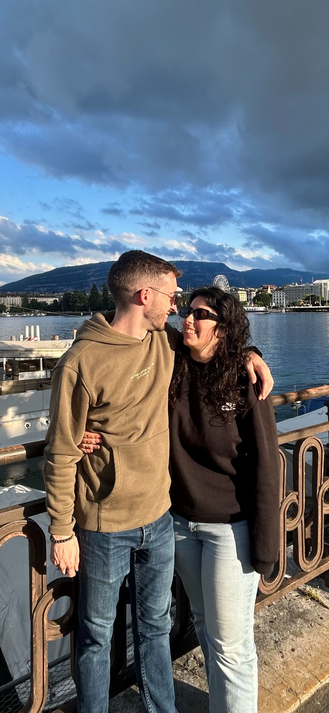

← Voltar atrás
Amar-te não foi um momento, foi um caminho, foi acontecendo devagar, nos detalhes, nas conversas que se estendiam sem darmos por isso, nos silêncios confortáveis e nos gestos simples que diziam mais do que mil palavras. Neste Dia dos Namorados e em todos os outros dias escolho-te, escolho amar-te com tudo o que sou, cuidar de ti e caminhar ao teu lado, sempre com o coração cheio pois só tu fazes-me sentir assim, amo-te daqui até à lua ❤️